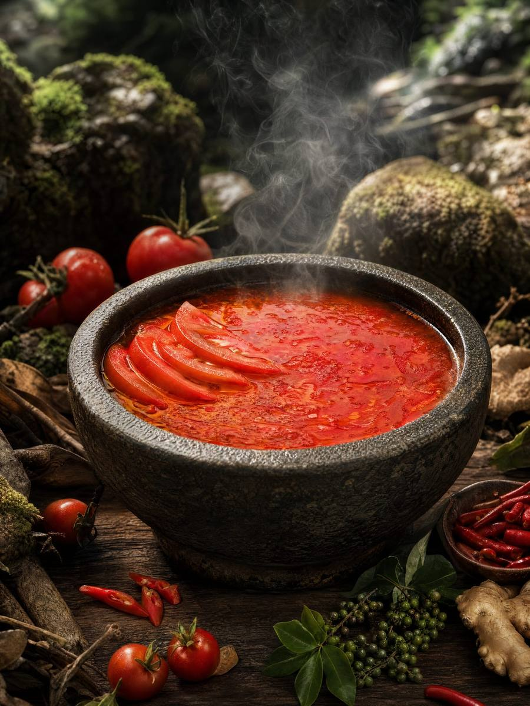
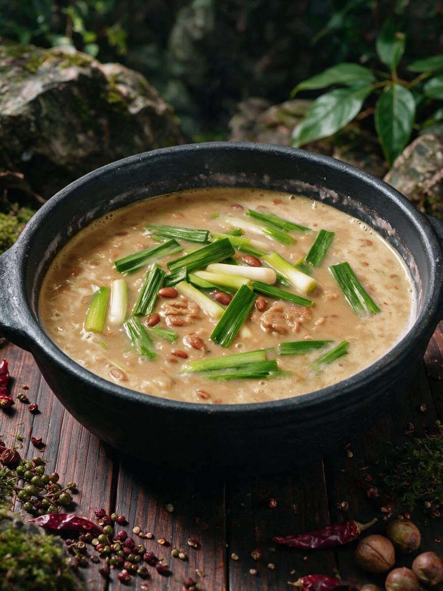
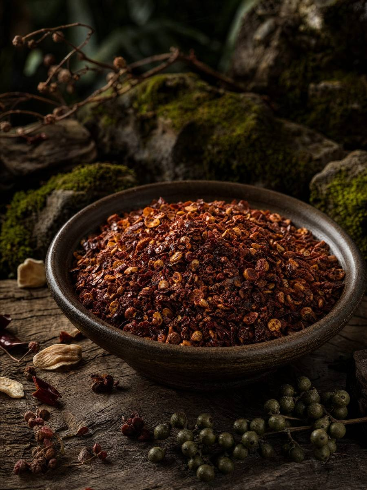

已落地核心方向
凯里酸汤火锅
以红酸汤为首发，建立“贵州原产地即享火锅套餐”产品模型。
GUIZHOU HOTPOT
贵州不同地区、民族、发酵方法和山地食材，共同形成极其丰富的火锅谱系。酸、辣、豆香、发酵香、肉香与山野食材，在不同火锅中形成完全不同的味觉性格。
A HOTPOT PROVINCE
在品牌的贵州火锅资料中，能够列出的地方火锅就包括红酸汤、白酸汤、豆米、夺夺粉、地摊、辣子鸡、豆花、蹄膀、小肠、牛瘪、虾酸等。它们不是同一个锅底的微调，而是对应不同食材、发酵方法、地域习惯与用餐方式。
红酸汤、白酸汤、虾酸等，体现贵州对发酵酸味的多种运用。
豆米、豆豉、豆花等，以豆类和发酵豆制品构成浓郁或温润的汤底。
辣子鸡、蹄膀、地摊等，突出肉香、糍粑辣椒、烟火气和不同烹饪方法。
FOUR FLAVORS TO KNOW
酸香鲜明、辨识度高，是巡黔记第一款产品选择的味型。
芸豆慢煮形成绵密豆香，常与软哨等肉香组合，温润而浓厚。
糍粑辣椒与鸡肉构成主角，可经历干香到加汤涮煮的风味变化。
酸菜的清爽酸感与蹄膀的胶质肉香组合，体现“酸解油腻”的贵州民间吃法。
RESEARCH & ROADMAP
目前官网重点介绍并明确落地的是凯里酸汤火锅套餐。豆米、辣子鸡、夺夺粉、地摊、酸菜蹄膀等属于品牌研究、储备或规划方向，是否正式上市、以什么规格上市，都以品牌后续正式发布为准。

以红酸汤为首发，建立“贵州原产地即享火锅套餐”产品模型。

以豆米汤底和贵州肉香组合呈现温润豆香。

围绕糍粑辣椒、鸡肉与贵州辣味文化继续开发。
THE BRAND PATH
巡黔记战略路径分成两个方向：纵向持续深挖贵州火锅，横向逐步进入贵州更广泛的主食、小吃、调味、山野食材和季节物产。火锅是第一把“尖刀”，不是品牌最终的全部边界。
“吃遍贵州 88 个县”的使命，也意味着产品开发不是围绕流行词闭门造车，而是持续寻找不同县域的味觉密码。
今天从酸汤开始，未来希望让消费者想到任何一种贵州火锅，都能有一条通往原产地风味的路。